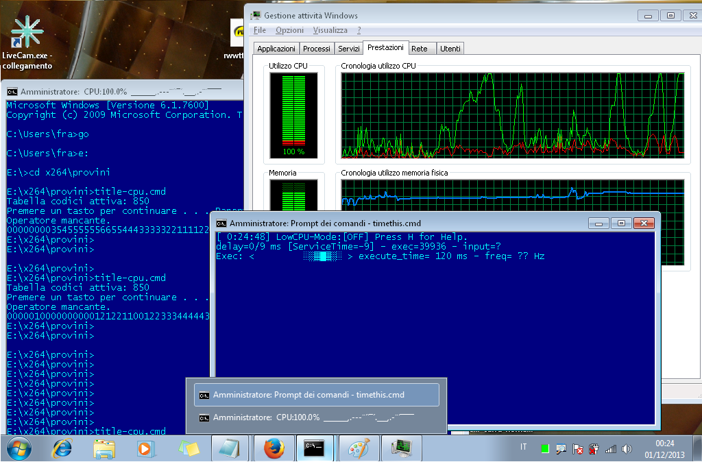

I have made this code for display the CPU usage on title bar.
This show a history like a graphics on the title bar
I have two problem:
- There are output of set /a that i don't want visible.
- There are strange error on initial startup.
I have investigated but without being able to find why
EDIT: thanks to penpen i have resolved. this is worked version on seven 32bit
An more readable and reliability (work better) version by penpen is here
Code: Select all
@echo off & setlocal EnableDelayedExpansion & if not "%1"=="" goto %1
chcp 850
rem sample of 5 seconds
start "" /B %0 title_cpu 5
pause
goto :eof
:title_cpu %1=sample_interval_sec
shift
set "counter=\Processore(_Total)\%% Tempo Processore" & rem italian version
rem set "counter=\processor(_total)\%%%% processor time" & rem english version
typeperf "!counter!" -si %1 | cmd /v:on /c"set S=_,..~-=ùùïî&set Bcpu= &for /L %%n in () do @(set v=&set /p v=&if defined v (set cpu=^!v:*,=^!&set cpu= ^!cpu:~1,-6^!&set /a i=^!cpu:~0^,-2^!*10/100>nul 2>nul&if defined i for %%b in (^!i^!^) do @(set Bcpu=^!Bcpu^!^!S:~%%b,1^!^)&set Bcpu=^!Bcpu:~-50^!&title CPU:^!cpu:~-5^!%% ^!Bcpu^!^)^) "
goto :eof

Einstein1969